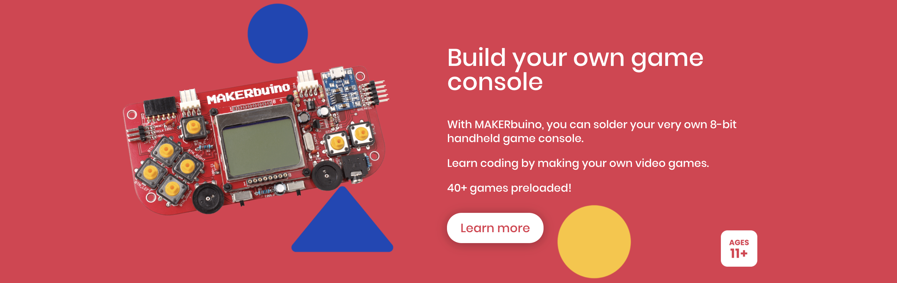
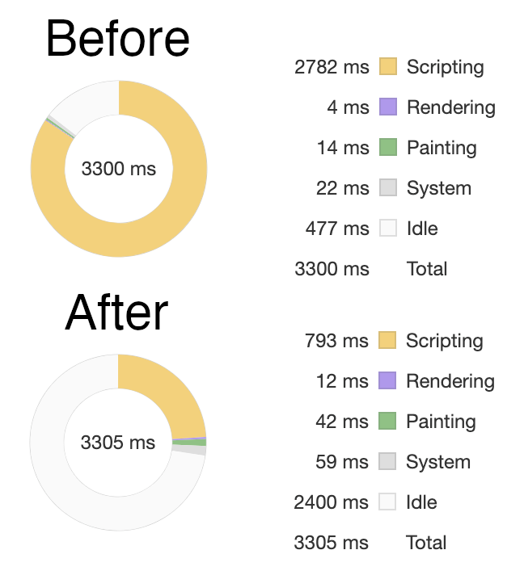

My story starts back in 2017. I came across a Kickstarter for MAKERbuino, a DIY kit where you build your own hand-held game system. This in turn is based on the original Gamebuino. It has a black and white Nokia screen, an 8-bit microcontroller running at 16Mhz, and is programmed using the Arduino IDE. It was fun writing simple games within the hardware constraints. A few people had written emulators for this original Gamebuino, a couple of them even running in a web browser. Later that year, a new version of the Gamebuino was announced, the Gamebuino META. I'd never written an emulator before, but it sounded like an interesting challenge.
As a side note, the main appeal of this device for me is creating my own games on the limited hardware. It is very accessible even for people with no programming experience. If this interests you, just be aware that there are also other options like the Pokitto and Arduboy.
Microcontroller
32-bit ARM Cortex-M0+ @ 48MHz
256KB flash
32KB SRAM
6 serial communication modules (SERCOM)
Timers and interrupts
Direct memory access (DMA) controller
To give this talk context, we need to discuss the hardware of the Gamebuino META. I am going to go pretty fast because you don't need to understand everything for the rest of the talk...
Perhaps the most important part to creating the emulator, it is running a 32-bit ARM-based processor at 48MHz. Many instructions can be executed in a single clock cycle, so we are talking about theoretically simulating 48 million instructions per second. Keep in mind that each of these simulated instructions involves several steps, such as: parsing the instruction, reading and writing values to memory, updating condition flags, and incrementing the program counter. At the end of the day, this is where the vast amount of processor time will be spent.
256KB of Flash memory. This is where the game is stored when running. Additional games can be loaded from an SD card. Although assets could be loaded from the SD card on demand, most games include _everything_ within those 256KB. Compared to programs sizes on modern PCs or JavaScript files for a simple website, this is miniscule!
32KB SRAM. This is where the running program stores any value that can change while the program is running, such as variables. 32KB isn't even enough to have a buffer representing every pixel on the screen!
There is built-in support for some serial communication modules. I bring it up because we will need to emulate this behavior for talking to the screen and buttons.
The processor can also be interrupted for certain events. One example is an interrupt for a certain amount of time passing, which is used by the game loop for displaying content at a fixed number of frames per second.
And finally, I'll mention the direct memory access controller. It allows the microcontroller to copy blocks of memory from one location to another without blocking the CPU from doing other work. We need this working as well as the game library depends on it to send screen data.
Screen
160 × 128 pixels
65K colors
Communicates over SERCOM4 using SPI
The screen is color, 160 by 128 pixel. Interestingly, it doesn't use 8 bits for red, green, and blue that you may be familiar with. Instead it is 16 bits per pixel, with red and blue using 5 bits and green using 6 bits. As mentioned on the previous slide, communication uses SERCOM.
Buttons
Communicates over SERCOM4 using SPI
D-pad, A, B, Menu, and Home all encoded as a single byte
There are 8 buttons. The button state is sent to the processor as a single byte, with each button using a different bit. This makes it super easy to emulate.
Ignored
And there are many aspects of the hardware that this emulator just ignores. Perhaps they will be added one day.
listen for button input
initialize emulator with game ROM
call gameLoop()
function gameLoop() {
tell emulator which buttons are pressed
loop for some number of steps {
simulate next CPU instruction
}
draw screen to <canvas>
schedule gameLoop() to be called in the future
}
With that background, we can take a stab at some pseudo code for the emulator. We will need to:
1. listen for input from the keyboard, mouse, gamepad, or other controller inputs we want to support,
2. load the game ROM we want to run,
3. and repeatedly call the game loop.
Within the game loop, we need to:
1. simulate some number of CPU instructions,
2. draw the game screen to the canvas,
3. and schedule the next execution of the game loop.
The last step is worth particular note. JavaScript runs on the main thread. If the emulation stayed in a hard loop, the browser would never be able to render changes to the screen. We need to have moments in the logic where it sleeps, allowing other browser tasks to complete. The more we are not hogging the CPU, the more responsive the site will be.
My first implementation of this emulator was written in TypeScript. It was incredibly satisfying to see it work successfully. Which brings us to, why rewrite this in Rust and WebAssembly?...
Why?

I had a hunch that I could get better performance by using WebAssembly. Many of the operations that the emulator simulates involve 8, 16, and 32-bit integer math. JavaScript numbers are represented as 64-bit floating point numbers. *(In fact, the microcontroller doesn't even have a floating point. All floating point cacluations are done by software.)* Don't get me wrong - JavaScript engines have become incredibly smart and fast. It just felt like it would be adventageous to have lower level control over memory for this particular workload. I don't want anyone to equate WebAssembly meaning faster than JavaScript. That definitely isn't always the case. This is a sample size of 1, and perhaps the JavaScript version could be faster than the WebAssebmly version with some tweaks. What I do know is that as someone who is very familiar with JavaScript and completely new to Rust, the end result ran several times faster!
The "Before" chart shows that the vast amount of time was spent by the browser running the emulator. The "After" chart shows that roughly a quarter of the time is spent running the emulator, leaving much more time available to the browser. Note that this was run on a beefy developer machine. You can imagine that running on lower end devices was very slow for the JavaScript version and acceptable for the WebAssembly version.
So depending on the workload, performance could be a reason for "Why." There are some other good reasons, including:
1. Existing legacy codebases in C or C++
2. Startup speed - JavaScript goes through many steps to execute. It has to download a rather verbose text format of the script. It needs to parse and execute the code. There is then usually a system that monitors hot paths and speculatively optimizes these paths to architecture-specific machine code. WebAssembly, on the other hand, is transferred as a binary format and can be converted to machine code more quickly.
3. I am all for using the right tool for the job. Since JavaScript has been the only language that runs in the browser for decades, we've seen numerous other languages that get transpiled to JavaScript. WebAssembly really is a compilation target. This opens up the opportunity for using many different languages in the browser.
(module
(func (export "add") (param $lhs i32) (param $rhs i32)
(result i32)
(i32.add
(local.get $lhs)
(local.get $rhs)
)
)
)
Chances are you'll never need to interact directly with the WebAssembly format. However, I'm one of those people that like to see how things work under the hood. Let's take a deep dive for a few slides before using this information at a higher level...
Just like various assembly languages that are compiled to machine code, WebAssembly has a text representation for the binary format. Here is a simple WebAssembly module. It:
* declares a function that has two 32-bit integers as input and a 32-bit integer as an output
* names this function `add` so that we will be able to call it from JavaScript
* adds the two integers together and returns the result
<!DOCTYPE html>
<html>
<head> … </head>
<body>
<script>
(async function() {
let obj = await WebAssembly.instantiateStreaming(
fetch("add.wasm")
);
console.log(obj.instance.exports.add(1, 2)); // 3
})();
</script>
</body>
</html>
Don't think JavaScript is out of the picture when using WebAssembly. The two need each other. WebAssembly has no direct access to the DOM. JavaScript loads the WebAssembly, and the two sides communicate via an interface.
Here is a bare minimum. We:
1. Use `WebAssembly.instanciateStreaming` to load the WebAssembly. Note that there are some other methods that perform similar functionality.
2. Call the `add` function that was exported from the previous slide.
That's it. Just keep in mind that JavaScript and WebAssembly agree upon an interface to talk to each other, and you probably want to minimize the number of times you cross that interface since it isn't free.
(module
(import "js" "mem" (memory 1))
(data (i32.const 0) "HAL")
(func (export "doSomething")
(local $i i32)
(loop $loop
(i32.store8
(local.get $i)
(i32.add
(i32.load8_u
(local.get $i)
)
(i32.const 1)
)
)
(local.set $i
(i32.add
(i32.const 1)
(local.get $i)
)
)
(br_if $loop
(i32.lt_u
(local.get $i)
(i32.const 3)
)
)
)
)
)
Now let's dive deeper. You have already seen an add operation on a 32-bit integer. How many value types are there? I found this quite surprising. There are only 4: 32 and 64-bit integers, and 32 and 64-bit floats. That is all. So how does WebAssembly handle something more complicated like strings or complex data structures? The WebAssembly has access to a piece of linear memory, addressable per byte. Think of it as a big array. It is up to the WebAssembly program to manage this memory however it sees fit. It seems reasonable that a string could just be consecutive letters stored in a format like ASCII. Time to look at a simplified example. Suppose we have a 3 letter word stored in this memory starting at address 0. Let's write a program that loops over the 3 letters and increments each by one. Line 3 is a new one that initializes this memory with "HAL", starting at address 0.
One more thing to mention before we trace through this code - Remember our add operation from the previous slide? This is syntactic sugar that is different from how the program is stored in binary format. Conceptually, WebAssembly is a stack-based machine. Values are pushed on and poped from a stack. *(Note that this is just conceptually; this may be optimized away when converted to machine code on the target computer.)* The order is different in the binary format. First, a constant of 1 is pushed onto the stack. Then, the value of `i` is pushed onto the stack. Finally, the add operation pops the top two values off the stack and replaces it with the result.
So I have rewritten the instructions in the order they appear in the binary format. We are going to trace through this algorithm.
Across the top is the value of the memory and our local variable `i`. Down the left side are the values on the stack. You can see that memory has been initialized with HAL. We will be working with the numeric representation of those letters.
The function starts with a loop instruction. All this is is a label we can jump to later.
Next we push the value of `i` onto the stack.
Then we push the same value onto the stack. I know this seems weird, but just go with me for a minute.
The `load8_u` instruction pops an address off the stack, and loads that value from memory as an unsigned 8-bit number.
1 is pushed onto the stack.
The top two values are popped and added together.
`store8` pops a value and index off the stack, and stores the value in memory. This is why we had that extra `i` on the stack from the start of the loop.
1 is pushed onto the stack.
`i` is pushed onto the stack.
Those two values are added together.
A value is popped off the stack and stored in `i`.
That value is pushed back onto the stack.
3 is pushed onto the stack.
Those two values are compared using "less than" as the comparison operator. The result of this operation is 1 for true or 0 for false.
And at the end of the loop we branch to the label if there is a truthy value on the stack, which is the case.
So we made it one iteration through this loop. The end result is that the value at memory location 0 was incremented by 1, and `i` was incremented by 1. Let's run through another iteration, but at a higher level.
First, we want to get the value of memory at index `i`.
Next, we want to increment that value by 1.
Then we want to store the value back to memory.
Then we want to increment `i` by 1.
Finally, we want to see if we've reached the end of our loop.
I'll trace through the final iteration without comments for anyone that wants to think about it.
The final branch does not trigger, and the function completes. And I'll display the memory as ASCII characters again.
Rust + WebAssembly
wasm-packSmall runtime, no garbage collector
Low-level control
Focus on safety
Modern features
Excellent error messages and documentation
Time to come back up a level. It doesn't make sense to write WebAssembly by hand. Instead, it is a compilation target for other languages. I chose to go with Rust, which I will explain why on this slide.
Rust has excellent support for compiling to WebAssembly. There is a `wasm-pack` that will compile your Rust source code to WebAssembly. As we looked at previously, there is some boilerplate code needed for JavaScript and WebAssembly to communicate with each other. `wasm-pack` will also generate JavaScript that makes this communication super simple.
So why Rust as opposed to some other language? One of the pros is that it has a very small runtime and no automatic garbage collector. If we were compiling a higher-level language that depends on a garbage collector, this logic would have to be included in the `.wasm` file because WebAssembly does not currently have any notion of a garbage collector.
Also I wanted fine-grained control over how execution and memory is used because my goal was to optimize for speed.
So far, languages like C or C++ would also meet these requirements. Since Rust is newer than those languages, it has many features that I found personally intriguing. Rust has a huge focus on safety. This may seem a bit weird if you haven't seen another language like this, but there is no `null`, so there aren't null pointer exceptions. The compiler is very strict. In many scenarios, if the compiler detects that you haven't handled all possible scenarios, it will produce a compile-time error. And the feature that was the largest learning curve for me was ownership. Each value in Rust has a variable that is the owner, and there can only be one owner at a time. When that owner goes out of scope, the value will be freed. References to values are also extremely useful when you want to pass a value into a function. There are also special rules for references: you can either have a single mutable reference, or any number of immutable references. These restrictions allow Rust to ensure your program never references invalid memory, but it does result in a different mental model when writing your program.
There are also modern features like closures and a rich package system called Crates.
With such strict compilation, it is nice that the compilation error messages are very detailed, and often suggest what needs to change.
I am sure I could have come to a similar result with my emulator using another langugae, but these are the reasons I went with Rust. And learning a new programming language is always a pro in my book!
fn fizz_buzz_1() {
for i in 1..=30 {
if i % 3 == 0 && i % 5 == 0 {
println!("FizzBuzz");
} else if i % 3 == 0 {
println!("Fizz");
} else if i % 5 == 0 {
println!("Buzz");
} else {
println!("{}", i);
}
}
}
fn fizz_buzz_2() {
(1..=30).for_each(|i| match get_special_message(i) {
Some(msg) => println!("{}", msg),
None => println!("{}", i),
});
}
fn get_special_message(i: isize) -> Option<&'static str> {
if i % 3 == 0 && i % 5 == 0 {
Some("FizzBuzz")
} else if i % 3 == 0 {
Some("Fizz")
} else if i % 5 == 0 {
Some("Buzz")
} else {
None
}
}
pub struct St7735 {
…
image_data: [0; St7735::WIDTH * St7735::HEIGHT];
}
impl St7735 {
…
pub fn byte_received(&mut self, value: u8,
porta: &PortRegisters, portb: &PortRegisters) {
…
let r = (0b1111100000000000 & pixel_data) >> 8;
let g = (0b0000011111100000 & pixel_data) >> 3;
let b = (0b0000000000011111 & pixel_data) << 3;
let color = (255 << 24) | // alpha
(b << 16) | // blue
(g << 8) | // green
r; // red
…
self.image_data[base_index] = color;
}
}
step(timestamp) {
… // Snip code to calculate number of iterations
// Run number of emulated cycles equal to `iterations`
this.gamebuino.run(iterations, this.buttonState);
// Draw to canvas
let buf8 = new Uint8ClampedArray(
memory.buffer, // buffer
this.gamebuino.image_pointer(), // byteOffset
160 * 128 * 4 // length
);
this.imageData.data.set(buf8);
this.ctx.putImageData(this.imageData, 0, 0);
this.ctx.drawImage(this.canvas, 0, 0);
// Request next step
this.requestId =
requestAnimationFrame(t => this.step(t));
}
fn execute_instruction(&mut self,
instruction: Instruction) {
match instruction {
Instruction::LslImm { rs, rd, offset } => {
let original = self.read_register(rs);
let result = original << offset;
self.set_register(rd, result);
self.cond_reg.c =
original & (1 << offset) != 0;
self.set_nz(result);
}
…
Instruction::Beq { offset } => {
if self.cond_reg.z {
self.set_register(PC_INDEX,
self.read_register(PC_INDEX) + offset);
self.increment_pc();
}
}
…
}
}